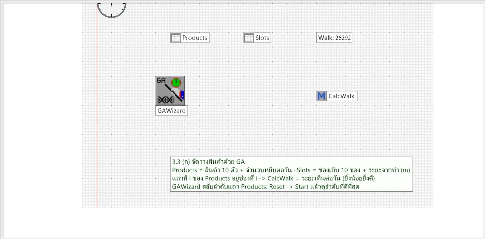
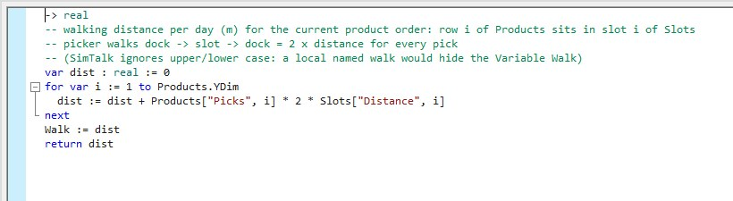
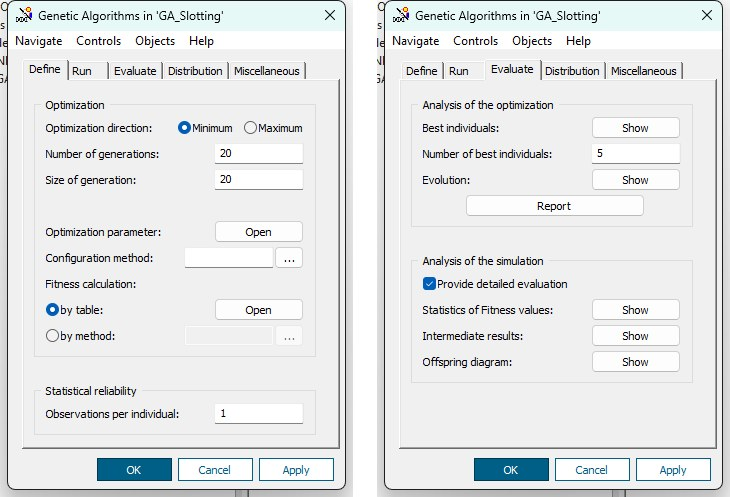
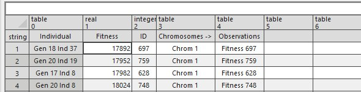
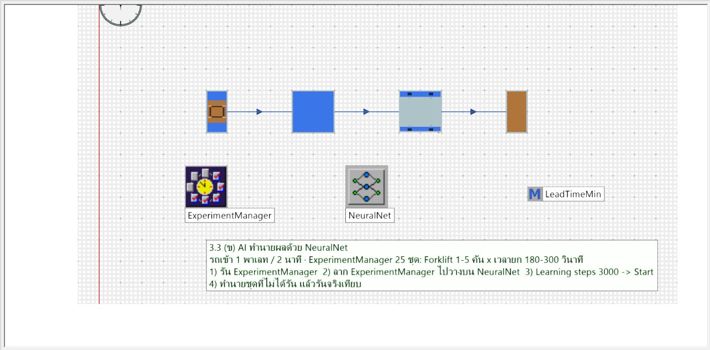
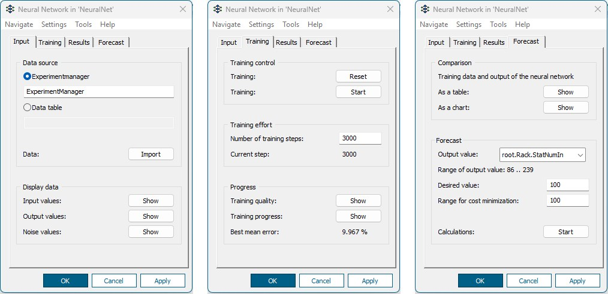

3.3 หาค่าที่เหมาะสม และ AI คาดการณ์
3. วิเคราะห์ข้อมูลจากแบบจำลองด้วย AI · ภาคปฏิบัติ
วัตถุประสงค์การเรียนรู้
- ตั้งโจทย์จัดวางสินค้า (Slotting) ให้ GAWizard สลับลำดับสินค้าเพื่อลดระยะเดินได้
- อ่านผล GA: ค่าที่ดีที่สุด ลำดับสินค้า และเทียบกับลำดับเดิมได้
- สอน NeuralNet จากผล ExperimentManager และใช้ทำนายชุดที่ไม่ได้รันได้
- บอกได้ว่าเมื่อไรควรเชื่อผลทำนายของ AI และเมื่อไรต้องรันแบบจำลองยืนยัน
บทนี้มี 2 โจทย์ในไฟล์เดียว: (ก) GAWizard หาลำดับวางสินค้า 10 ตัวในช่อง 10 ช่อง ให้คนหยิบเดินน้อยที่สุด และ (ข) NeuralNet เรียนจากผลการทดลอง 25 ชุด แล้วทำนายผลของชุดที่ไม่ได้รัน — สองเครื่องมือนี้คือ "หาค่าที่ดีที่สุด" และ "AI คาดการณ์" ที่เล่าไว้ในบท 3.1
3_3_GA_NeuralNet.spp ในโฟลเดอร์ 2504_AI
ของไฟล์ตัวอย่าง (2 เฟรม: GA_Slotting และ NN_Predict) · พื้นฐาน ExperimentManager จากบท
3.2
ภาพรวม
| ขั้นที่ | เรื่อง | ได้อะไร |
|---|---|---|
| 1 | (ก) โจทย์จัดวางสินค้า | Products, Slots, CalcWalk — ลำดับเดิมเดิน 26,292 ม./วัน |
| 2 | (ก) ตั้งค่า GAWizard | สลับลำดับแถว Products, ยิ่งเดินน้อยยิ่งดี |
| 3 | (ก) รัน GA และอ่านผล | 17,892 ม./วัน (ลด 32 %) |
| 4 | (ข) ข้อมูลสอน AI | ExperimentManager 25 ชุด |
| 5 | (ข) สอน NeuralNet | Training 3,000 รอบ |
| 6 | (ข) ทำนายและตรวจ | เทียบผลทำนายกับการรันจริง |
ขั้นที่ 1 (ก): โจทย์จัดวางสินค้า

- 1เปิดเฟรม
Models › GA_Slotting— ไม่มีการไหลของงาน มีแต่ตารางกับ Method คิดระยะทาง - 2
Products: สินค้า 10 ตัว +Picks= จำนวนครั้งที่หยิบต่อวัน (P04 หยิบบ่อยสุด 200 ครั้ง, P05 น้อยสุด 8 ครั้ง) - 3
Slots: ช่องเก็บ 10 ช่อง +Distance= ระยะจากท่า (S01 ใกล้สุด 5 ม. ไกลขึ้นช่องละ 3 ม.) - 4กติกา: สินค้าแถวที่ i อยู่ช่องที่ i — สลับลำดับแถว Products = ย้ายสินค้าไปช่องอื่น
- 5คอลัมน์
OrigและChromใน Products GAWizard เพิ่มให้เอง (ใช้จำลำดับเดิมและลำดับที่กำลังลอง) ไม่ต้องแก้

CalcWalk คิดระยะเดินต่อวัน: คนหยิบเดิน ท่า → ช่อง → ท่า = 2 × ระยะ ทุกครั้งที่หยิบ รวมทุกสินค้า แล้วเก็บใน Variable Walk
· ลำดับเดิม (P01 ที่ S01, P02 ที่ S02, …) = 26,292 ม./วัน
walk กับ Variable Walk คือชื่อเดียวกัน —
ถ้าตั้งชื่อซ้ำ ค่าจะไม่ไปถึง Variable (ในไฟล์จึงใช้ชื่อ dist)ขั้นที่ 2 (ก): ตั้งค่า GAWizard

- 1ดับเบิลคลิก
GAWizard— หน้าต่าง Genetic Algorithms - 2แท็บ
Define: Optimization direction = Minimum (ระยะเดินยิ่งน้อยยิ่งดี) - 3Number of generations = 20 · Size of generation = 20 (ตั้งไว้แล้ว)
- 4
Optimization parameter › Open: ตารางโจทย์ใส่root.Products= ให้ GA สลับลำดับแถวของตารางนี้ (โจทย์แบบลำดับ / Sequence) - 5
Fitness calculation › by table › Open: ค่าที่ใช้ตัดสิน =root.CalcWalk
ขั้นที่ 3 (ก): รัน GA และอ่านผล
- 1แท็บ
Run›Reset›Start— GA ลอง 780 แบบ ใช้เวลาไม่ถึง 1 วินาที - 2แท็บ
Evaluate›Best individuals › Show— ตารางคำตอบที่ดีที่สุด 5 อันดับ - 3คอลัมน์
Fitness= ระยะเดินต่อวัน ·Chromosomes= ลำดับสินค้าของคำตอบนั้น

| ลำดับในช่อง S01 → S10 | ระยะเดิน (ม./วัน) | |
|---|---|---|
| ลำดับเดิม | P01 P02 P03 P04 P05 P06 P07 P08 P09 P10 | 26,292 |
| GA อันดับ 1 | P04 P08 P01 P06 P03 P10 P07 P09 P02 P05 | 17,892 (−32 %) |
GA วางสินค้าที่หยิบบ่อยไว้ใกล้ท่า (P04 200 ครั้ง → S01, P08 150 ครั้ง → S02, …) — โจทย์นี้ตรวจคำตอบได้ด้วยมือ (เรียงตามจำนวนหยิบจากมากไปน้อย) และ 17,892 ม. คือค่าที่ดีที่สุดจริง · หลักนี้เรียกว่า ABC / Velocity Slotting
ขั้นที่ 4 (ข): ข้อมูลสอน AI — ExperimentManager 25 ชุด

- 1เปิดเฟรม
Models › NN_Predict— แบบเดียวกับบท 3.2 แต่รถเข้าสม่ำเสมอ 1 พาเลททุก 2 นาที (30 พาเลท/ชม.) - 2ExperimentManager ตั้งไว้ 25 ชุด: Forklift (
Putaway.XDim) 1–5 คัน × เวลายก (Putaway.ProcTime) 3:00, 3:30, 4:00, 4:30, 5:00 นาที · ชุดละ 1 รอบ - 3ค่าผลตอบ:
Rack.StatNumIn(ขึ้นชั้นใน 8 ชม.) และLeadTimeMin - 4ดับเบิลคลิก
ExperimentManager›Reset›Start— ขึ้น Current experiment 25/25
ตัวอย่างจากตาราง: Forklift 1 คันได้ 86–144 พาเลท · 2 คัน 172–235 · 3 คันขึ้นไปได้ 231–239 พาเลท (ใกล้จำนวนที่เข้ามาทั้งหมด)
ขั้นที่ 5 (ข): สอน NeuralNet

- 1ลาก
ExperimentManagerไปวางบนNeuralNet— NeuralNet นำเข้า Input 2 ตัว และ Output 2 ตัวจากผล 25 ชุด - 2ดับเบิลคลิก
NeuralNet› แท็บInput: Data source = ExperimentManager - 3แท็บ
Training: Number of training steps = 3000 (ตั้งไว้แล้ว) ›Start— ใช้เวลาประมาณ 10 วินาที - 4ดู
Best mean error(ในภาพ 9.967 %) และTraining quality › Show - 5แท็บ
Forecast:As a table / As a chart › Showเทียบค่าจริงกับค่าที่ NeuralNet ทำนาย
ขั้นที่ 6 (ข): ทำนายชุดที่ไม่ได้รัน แล้วตรวจด้วยการรันจริง
เราให้ NeuralNet ทำนาย 3 ชุดที่ไม่มีในตาราง (เวลายกไม่ตรงกับ 25 ชุด) แล้วแก้ค่าใน Putaway รันจริง 8 ชม. เทียบ:
| Forklift / เวลายก | พาเลท: AI ทำนาย | พาเลท: รันจริง | เวลาเฉลี่ย: AI | เวลาเฉลี่ย: จริง |
|---|---|---|---|---|
| 2 คัน / 225 วินาที | 218 | 228 | 24.1 นาที | 15.4 นาที |
| 3 คัน / 195 วินาที | 242 | 239 | 1.3 นาที | 5.1 นาที |
| 4 คัน / 285 วินาที | 239 | 238 | 5.4 นาที | 6.8 นาที |
จำนวนพาเลท AI ทำนายคลาดเพียง 1–4 % แต่เวลาเฉลี่ยคลาดมาก — เวลารอเปลี่ยนแบบกระโดดเมื่อใกล้คอขวด (2 คันเริ่มยกไม่ทัน) และ 25 ชุดยังน้อยเกินจะเรียนรูปแบบนี้ได้
ทำนายด้วยโค้ด (Method ในเฟรม NN_Predict) — ลำดับ Input / Output เหมือนใน ExperimentManager:
var x : table[real]
x.create
x[1,1] := 3 -- Forklift 3 คัน
x[1,2] := 195 -- ยกพาเลทละ 195 วินาที
var y := NeuralNet.getOutput(x)
print y[1,1] -- ทำนาย Rack.StatNumIn
print y[1,2] -- ทำนาย LeadTimeMin